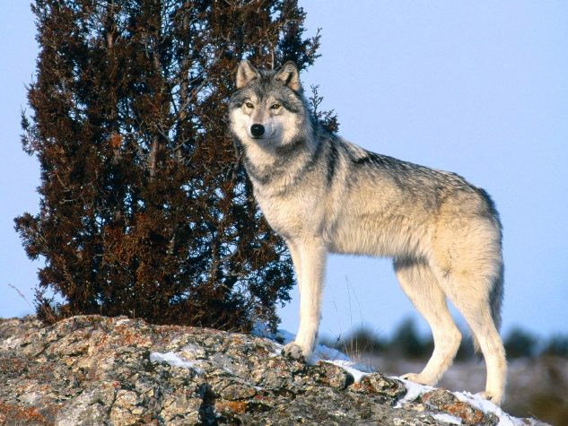

У яких регіонах живе вовк?
В даний час ареал проживання вовків значно скоротився. Це пов’язано з безконтрольним їх винищенням у минулому. Більшість хижаків знаходиться на території:- України
- північної частини Аравійського півострова
- Афганістані
- Грузії
- Китаї
- Кореї
- Ірані
- індостан
- Іраку
- Азербайджані
- Скандинавії
- Прибалтиці
- Італії
- Польща
- Балканах

Вовки здатні жити на різній місцевості, проте перевагу вони віддають місцям із слабким лісовим масивом. Найчастіше вони живуть неподалік людини. У тайзі вони супроводжують його та селяться на території, очищеній людьми від лісу.
Вовк – територіальна тварина. У холодну пору року зграї живуть осіло. Межі території, де вони живуть, позначаються пахучими мітками. Взимку площа місцевості зайнята хижаками становить до 44 км. Проте з наближенням весни зграя розпадається по парах. Найсильніші представники залишаються на своїй території, а одинаки ведуть кочове життя. Вовки часто супроводжують стада худоби та оленів .

Для виведення потомства тварини влаштовують лігва. Найчастіше вони є природні сховища – чагарники, заглиблення в скелях. У деяких випадках вовки займають нори інших тварин – борсуків, песців, бабаків. Вкрай рідко риють їх самостійно. Найсильніше до лігва прив’язана вовчиця в період вирощування посліду. Самець не користується ним. Цуценята ростуть у добре прихованих місцях: на пагорбах, в ярах, у покритих густою очеретом берегів озер, густому чагарнику. Вовки ніколи не полюють поблизу свого лігва. Після того, як цуценята зміцніють для тривалих переходів, тварини покидають свій притулок. Для відпочинку вони щоразу шукають нові, але добре захищені місця. Вовченята зовні нагадують цуценят собаки, мають коричневе забарвлення вовни.
Скільки живе вовк?
Оскільки вовки відносяться до сімейства собачих, то й живуть вони приблизно стільки ж, скільки й собаки. Але спосіб життя вовків у дикій природі дуже суворий і вовки помирають від хвороб, травм чи нестачі їжі, раніше свого терміну. У дикій природі, в середньому, вовки живуть 10-15 років. Але при хорошому догляді та правильному харчуванні вони можуть дожити і до 20 років.
Чим харчується вовк?
- Антилопи
- Сорочки
- Лось
- Кабан
- Олені
У процесі еволюції у вовків сформувався ряд фізіологічних особливостей, що дозволяє їм долати тривалі відстані у пошуках їжі. Шлях за кілька кілометрів тварини з легкістю пробігають на швидкості близько 9 км/год. Під час погоні вона зростає до 66. При цьому псові можуть робити стрибки до 4 метрів, не зупиняючи бігу.
Фізіологічні характеристики
- Похилий спина
- обтічний грудний відділ
- міцні ноги
- Спеціальні кровоносні судини зігрівають лапи від холоду.
- перетинки між пальцями дозволяють зменшити навантаження на поверхню. Завдяки цьому вовк може швидко пересуватися по засніженій землі.
- Хижаки під час руху спираються виключно на пальці, а не на всю ступню. Цей спосіб пересування дає можливість балансування маси.